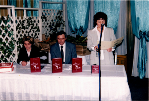
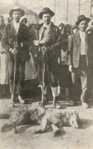

Književni rad
ROMANI:

Promocija romana Križevi i ruže
Prijevod na mađarski Stjepan Blažetin, Pečuh, 2008.
Križevi i ruže Pave Petričevića – Književni osvrt urednice romana dr. sc. Anice Bilić.

Ubijeni vuk u Mikanovcima 1923.
Roman govori da bi bez ljubavi nestalo čovječanstvo, da je ljubav najvažnija, da je ubojica i izlječitelj te darivatelj užitaka i nadnaravne snage, da razara loše i gradi novo, bolje.
On opisuje djelovanje nevidljivog, izvanzemaljskog suda, sporog, pravednog, nepogrešivog, nepodmitljivog, govori o slučajnostima zbog kojih se netko rodi, netko umre, zbog kojih pada kiša te nastaju i nestaju carstva. On se bavi intuicijama i snovima koji predviđaju što će se dogoditi za pedeset godina.
Zamah leptirovih krila daje sliku Slavonije pedesetih godina prošlog stoljeća i prikazuje vladavinu ološa u kojoj karijeristi, primitivci i nesposobnjakovići dolaze do diploma dvomjesečnim kursovima. Bahati su, obijesni, ritaju se. Takvih će nažalost biti i u budućnosti. Leptir i leptirica neka zato zamahnu krilima i stvore vjetar koji će otpuhati bar neke od njih. Jako je važno da na visokim položajima naopako okrenutih bude minimalno, a što više sposobnih, poštenih i marljivih koji služe narodu.
Miroslav S. Mađer: Dojmljiva slavonska kronika šokačkog majstora pera.
Marina Petričević: Nakon što leptir zamahne krilima.
Marija Petričević: Jezik romana Zamah leptirovih krila.
Marija Tovilo: Pogovor urednice.
Bila kuća je roman o društvu, povijesti i politici, o obitelji, karakterima i međuljudskim odnosima, ali i roman o gotovo utopijskoj viziji jednoga čovjeka koja se prenosila s generacije na generaciju sve dok nije sazrelo vrijeme njenog ispunjenja, barem na kratko.
Roman rekonstruira vrijeme neposredno nakon odlaska Turaka s područja Slavonije, kada su sjećanja na njih još uvijek svježa i živopisno se prepričavaju, kada je utjecaj njihovih običaja i dalje vidljiv, ali se polako uspostavlja novo društvo i novi zakoni.
U takav povijesni kontekst smještena je pseudopovijesna priča o nekoliko generacija obitelji Petričević (od 17. do 19. stoljeća) koji sebi zadaju za obavezu pripomoći ustroju novog i boljeg sela kroz gradnju crkve i škole, ali i kroz, za njih od velike važnosti, uvođenje pismenosti za sve. No, uz misli o društveno-korisnom radu, jedan od protagonista, Petar Petričević (1680.-1756.), zabavlja se mišlju o izgradnji velebne kuće, za ono vrijeme možemo reći i dvorca, za svoje potomstvo. Spletom okolnosti primoran da nekoliko mjeseci leži u bolesničkom krevetu, Petar to vrijeme koristi za maštanje o Bílōj kući. Svoje ideje detaljno razrađuje, sve crta i zapisuje na papir, a njegovi zapisi postaju nit vodilja generacijama Petričevića nakon njega, koji polako pripremaju teren, sve do Đure koji sto godina nakon Petrove skice te vizije uspijeva i ostvariti.
Roman je pisan u 1. licu jednine, u obliku Đurinih dnevničkih zapisa. Đuro Petričević zapisuje događaje koji se odvijaju za vrijeme njegova života (od Božića 1796. do proljeća 1825.), ali i događaje iz prošlosti o kojima saznaje iz priča did Grge, bab Luce i drugih likova, te ih dopunjuje svojim komentarima i zaključcima o moralu, životu i ljudima.
U takvom obliku pripovijedanja uočljiva je složena fokalizacija[1] (nalik onoj u Andrićevom romanu Prokleta avlija), jer Đuro nije jedini fokalizator. Iz Đurina pera saznajemo ono što on vidi i čuje, ali i ono što je od drugih likova čuo. Na trenutke čitatelj dobiva dojam da pripovijedanje preuzima Grga ili Petar, jer imamo uvid u detalje kao što su njihove misli i osjećaji, a opet u sljedećem retku Đuro izvodi svoje zaključke o ispripovijedanom i zapliće se u svojim brigama.
Osim toga, kada govorimo o fokalizaciji, važno je istaknuti kako priča o borbama s razbojnicima Đurinog šukundjeda Petra prolazi minimalno kroz tri pripovjedača u razdoblju od minimalno 80 godina prije nego što se našla u Đurinom dnevniku. Jer, u vrijeme kada započinje naša priča o vizionaru Petru, Petar je bio mladić koji još nije ni upoznao buduću ženu. Dakle, 40-ak godina kasnije, kao starac, on događaje iz svoje mladosti prepričava unuku Grgi, koji onda te iste događaje, također u starosti, 40-ak godina poslije, prepričava svom unuku Đuri. U cijelu tu priču, upliću se i drugi likovi (kao primjerice Kuzman ili bab Luca) iz čije perspektive na iste događaje pada sasvim drugačije svjetlo. Mladi Đuro sve to sluša i naknadno zapisuje, onako kako je on to razumio. Sve navedeno vidno utječe na slojevitost romana, ali i na vjerodostojnost priče, čija je procjena ostavljena čitatelju na volju.
Uz poigravanje s vjerodostojnošću pripovjedača i priče, kroz roman je uočljivo i poigravanje s idejom relativnosti istine. Je li netko marljiv ili je samo pohlepan? Je li drugi lijen ili samo skroman? U tom smislu, u romanu ćemo često naići na suprotstavljanje oprečnih stajališta koje dovodi do stvaranja kontroverznih diskusija o važnim životnim pitanjima koja postaju pokretač za Đurina filozofska razmišljanja (muška nasuprot ženskoj perspektivi, mladi i stari, svećenici i seoski intelektualci, bogati i siromašni, materijalisti i hedonisti…).
Đurinu pažnju posebno zaokupljaju odnosi među ljudima, pa tako, primjerice, u svojim tekstovima često promišlja o pojmu vođe, bilo da se radi o ratnom zapovjedniku koji osmišljava vojne akcije i snosi odgovornost za pobjedu/poraz, ali i život i postupke svojih vojnika, ili da se radi o vođi obiteljske zadruge koji organizira velike poslove, upravlja financijama te brine o međusobnim odnosima njezinih članova. S obzirom na to da u životu nije imao sreće u ljubavi, našavši se jednoga dana i sam na poziciji upravitelja obiteljske zadruge Petričević, Đuro se odlučuje okrenuti onome što ga zanima i što mu ide te svoj život posvećuje upravljanju zadrugom i ostvarivanju velikih ciljeva koje mu je zacrtao Petar.
Pisan na rekonstruiranom slavonskom dijalektu s kraja 18. i početka 19. stoljeća, kroz svijest glavnog junaka Đure Petričevića, roman Bila kuća čitatelju nudi povratak u slavonsko selo kakvo danas više ne postoji. Osim jezika, opisi političke situacije, društvenog ustroja, materijalnog stanja, životnih okolnosti, običaja i svakodnevnog života stvaraju živu sliku tog davno prošlog vremena koje je toliko različito od našeg, a opet, s ljudima koji su nam toliko isti.
Na kraju možemo zaključiti da je Bílā kuća zapravo roman o ljudima smještenima u određenu sredinu, u određeno vrijeme, koji pokušavaju naći svoj životni cilj, nešto što će ih pokretati. Bila to ljubav, nauka, materijalni napredak ili nešto drugo, mora biti dovoljno dobar kako bi nas motivirao da mu i usprkos preprekama ne prestanemo težiti. Jer, nije toliko ni važan dolazak do cilja, koliko je važno putovanje, kretanje prema nečemu što mi smatramo važnim. Pa na kraju krajeva, iako je Petrova vizija za njegovog života ostala samo na skici, bez nje ove priče ne bi bilo.
Roman prvenstveno govori o 1. bataljunu (bojnoj) 109. brigade koji je jedini mobiliziran 28. 6. 1991. i u kojem su bili pripadnici iz Starih i Novih Mikanovaca, Vođinaca, Ivankova, Jarmine, Retkovaca, Prkovaca, Rokovaca i Andrijaševaca te poneki iz Vinkovaca. Djelovao je kao vojna postrojba, za razliku od ostalih koji nisu bili cjeline, već su bile postrojbe mjesnih zajednica i pod zapovjedništvom lokalnih čelnika.
Linija obrane bataljuna protezala se u dužini od 10 km rubom šume Durgutovice, preko voćnjaka Borinci do kraja Jarmine. Napadana je topnički i diverzantski. Najvažnija u toj obrani bila je Jarmina koja je okružena srpskim selima Karadžićevo na zapadu, Markušica i Gaboš na sjeveru i Ostrovo na istoku. JNA je namjeravala okupaciju Jarmine i Ivankova u studenom i prosincu, ali je odustala, jer je pravilno procijenila da ne bi uspjela.
Pripadnici bataljuna dali su veliki doprinos u obrani Vukovara. Već 7. rujna prva grupa sastavljena od 50 pripadnika bataljuna krenula je u Borovo i držala položaje kod Doma tehnike i Internata, dakle liniju prema Borovu selu gdje su bili Arkanovci koji su ubili 12 redarstvenika. Kasnije su na toj crti bile još 3 grupe te još jedna u Bogdanovcima čime je 1. bataljun 109. brigade HV dao veliki doprinos da Vukovar nije okupiran 14. rujna, već se držao do 18. studenog čime je oslabljena JNA, a ojačala HV.
Pripadnici bataljuna držali su još položaje u Đeletovcima, Vinkovcima kod Inlesa, u Maloj Bosni, na Zalužju, minirali u Lipovcu, Otoku i Vinkovcima te sudjelovali u napadu na Karadžićevo i Ostrovo. Nigdje nisu ustuknuli. Jedna od najznačajnijih aktivnosti bataljuna bilo je zarobljavanje vlakova.
Osim opisa ratnih događanja u romanu su dani i obični ljudski odnosi vojnika i ostalih prije, za vrijeme i poslije rata.

U Durgutovici

Dom Tehnike

Punkt u Jarmini
Zbirka pripovjedaka radnog naslova Erotske priče sastoji se od opisa dvadesetak raznoraznih ne baš svagdašnjih događanja o kojima se javno ne govori. Nisam siguran da ću ju objaviti. Imala bi oko 300 stranica.